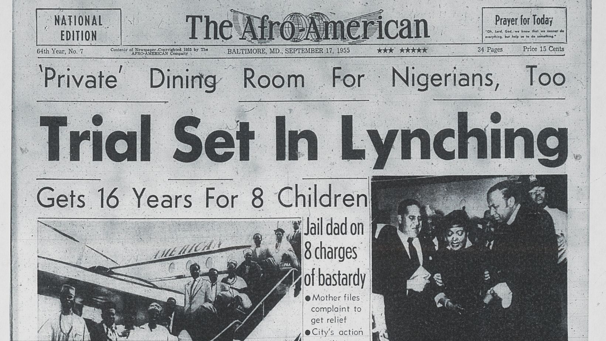
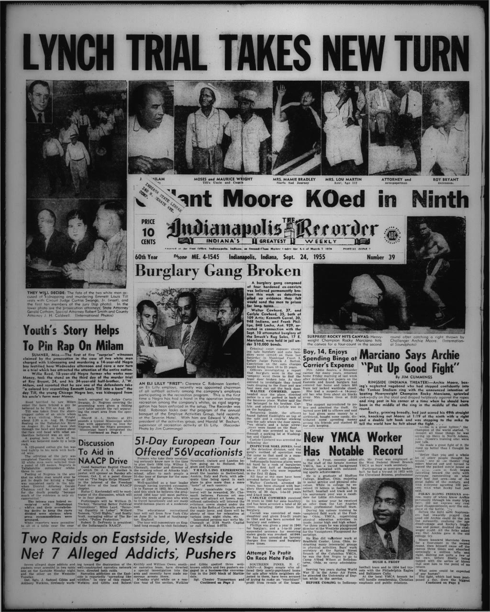
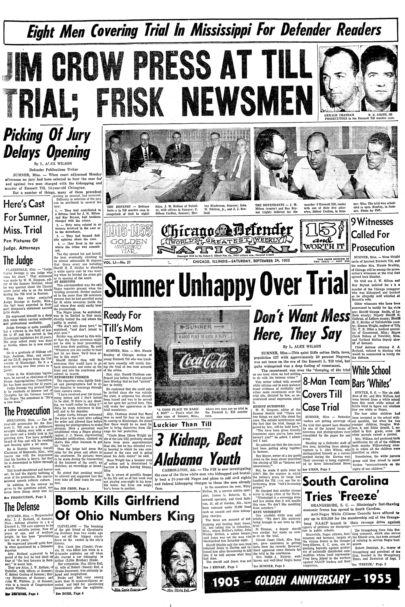
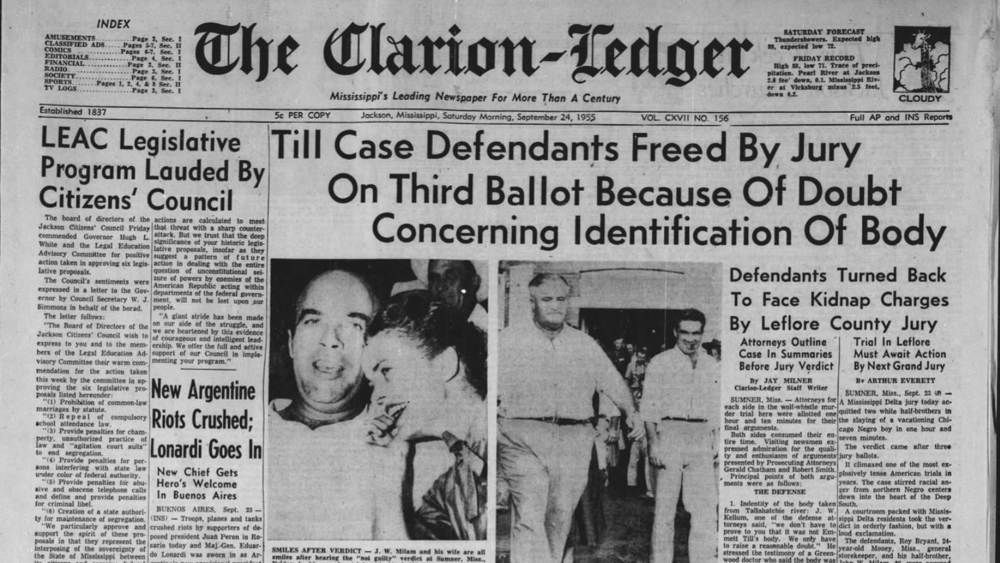
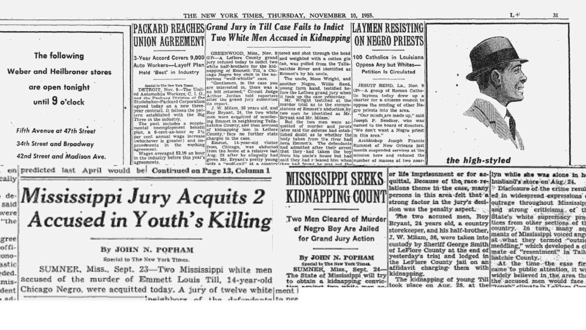

HN HN-606 · September 24, 1955 · Civil Rights & Social Change > Racial, Ethnic & Religious Justice > Lynching and racial violence
Authentic images retrieved from Florida State University Libraries (Emmett Till Archives LibGuide), Hoosier State Chronicles (Indiana State Library) and Emmett Till Project (Chicago Defender page scans). Article crops are located using the archive's own OCR word coordinates and rendered at native crop resolution; article clips are assembled from the archive's own article-block images; page images marked "archive tiles" are stitched from the archive's own tiled page service at its 256-px tile cap; page images marked "issue PDF" are single pages rasterised from the archive's own issue PDF, with the page chosen by matching the headline against the PDF's text layer; page scans are reduced-size access renditions. No images were generated, mocked, or retouched.





Not yet acquired. Queued for provider-specific acquisition testing (see source-acquisition manifest).
URL (preserved verbatim): https://newspapers.library.in.gov/?a=d&d=INR19550924-01.1.1
Saved research report: Historical_Newspaper_Event_Research_603-627_2026-10-23.md
Evidence note: A newspaper report means a historical publication made a claim; it does not establish that claim as fact. Contemporary reporting is separated from later scholarly context and our own assessment.